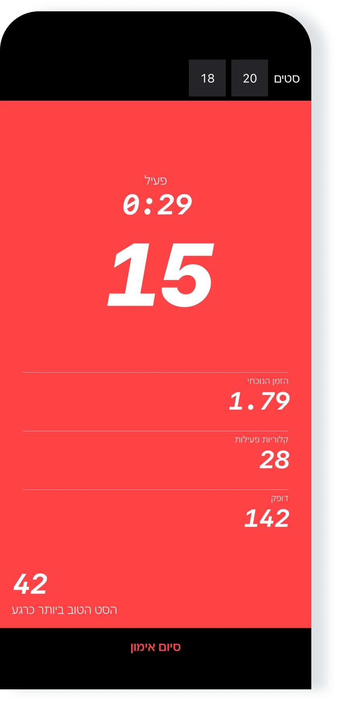
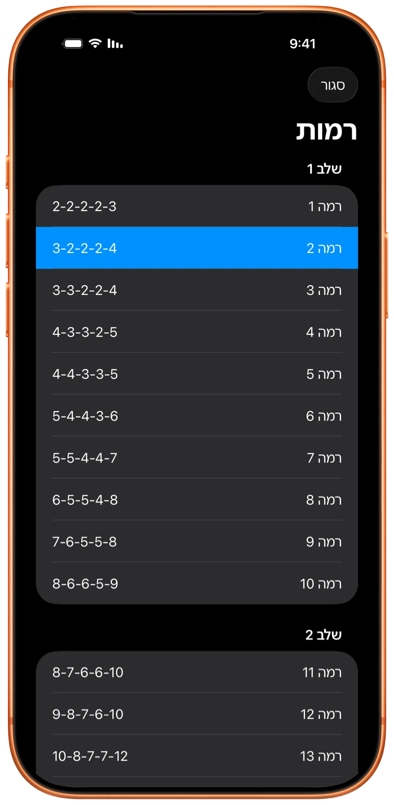
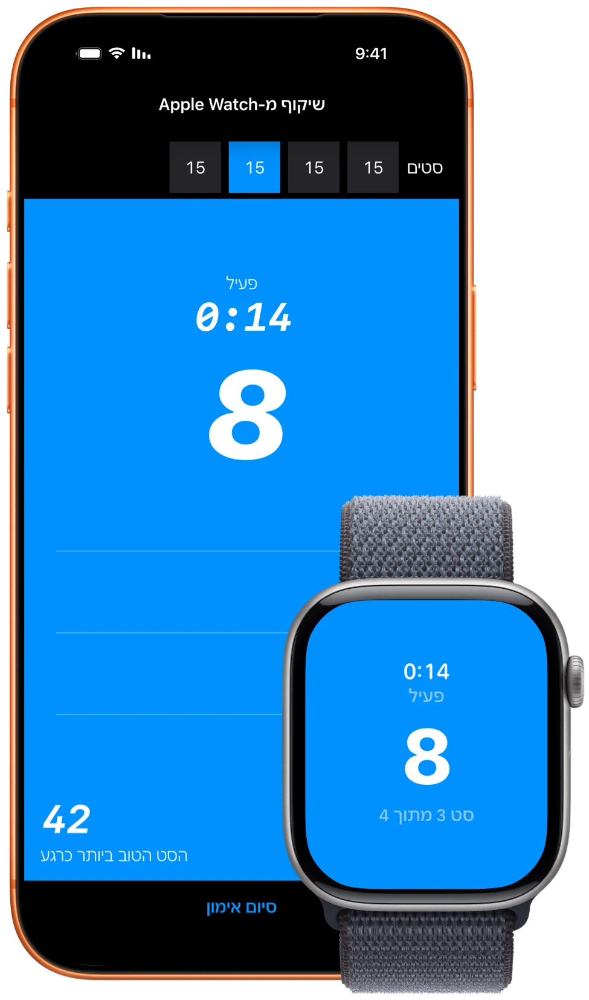
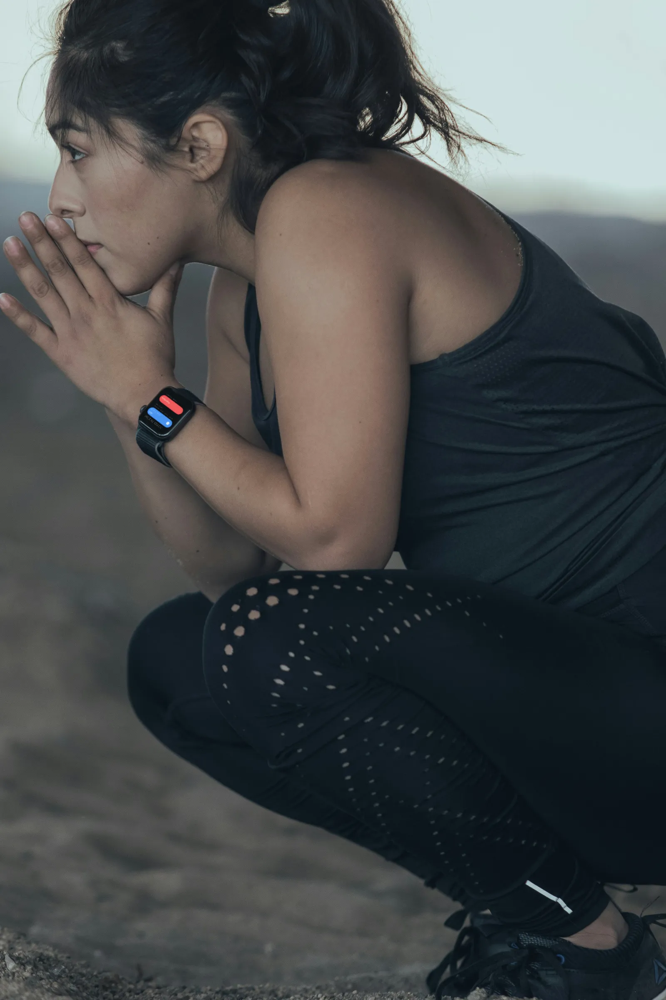

יישום מדהים
״אני ממש אוהב את היישום הזה. הפשטות שלו היא מה שעושה אותו לטוב ביותר!״
אימון שכיבות סמיכה עבור iPhone, iPad, ו-Apple Watch
עקבו אחר התוכנית או התאמנו באופן חופשי. Pushanova סופרת את שכיבות הסמיכה שלכם ב-iPhone, ב-iPad וב-Apple Watch.
חינם להתחלה. ללא חשבון. ללא פרסומות.

התוכנית כוללת 50 רמות. התחילו בכל רמה, או התאמנו באופן חופשי ובחרו את הסטים שלכם בעצמכם. תוכלו גם לתעד סטים של שכיבות סמיכה במהלך אימוני סיבולת לב-ריאה או כוח.
Pushanova אינה דורשת לוח זמנים יומי או שבועי. ניתן לחזור על רמה ולקחת ימי מנוחה, ללא קנס על הפסקה.

הניחו את ה-iPhone או ה-iPad שלכם על הרצפה, או התחילו ב-Apple Watch. ספירה קצרה לאחור תיתן לכם זמן להיכנס לתנוחה.
Pushanova סופרת את שכיבות הסמיכה שלכם באופן אוטומטי ומתעדת סטים, קצב, זמן וקלוריות. אתם קובעים כמה זמן לנוח: להמשיך מוקדם יותר או לנוח יותר זמן.
התחילו וסיימו אימון ב-Apple Watch גם כשאין iPhone בקרבת מקום. בשילוב יחד, ה-Apple Watch סופר בעוד ה-iPhone מציג את אותו אימון.
Pushanova שומרת כל אימון שהושלם. ההיסטוריה שלכם מראה כיצד האימונים משתנים לאורך זמן.

״אני ממש אוהב את היישום הזה. הפשטות שלו היא מה שעושה אותו לטוב ביותר!״
״זה מעולה. זה עוזר לי לעשות יותר שכיבות סמיכה, וזה מניע אותי להמשיך להשתפר.״
״אני יכול לעשות כל כך הרבה שכיבות סמיכה עכשיו! נכתב על ידי הבן שלנו בן ה-13, שקיבל המון מוטיבציה מהיישום הזה.״
״אני אוהב את היישום הזה. לאחרונה החלטתי לבדוק כמה מהר אוכל להגיע ל-100 שכיבות סמיכה. לא הצלחתי למצוא יישום שהופך את זה לקל במחיר נוח עד שמצאתי את זה. אני אוהב כמה שהיישום נקי. המפתח גם מגיב מאוד למשוב.״
ביקורות מה-App Store נערכו קלות לשם אורך ובהירות.
מעקב אחר שכיבות סמיכה ב-iPhone וב-iPad אינו מצלם תמונות ואינו מקליט, שומר או מעלה וידאו. Pushanova אינה משתמשת במצלמה כדי לזהות אתכם.
Pushanova אינה דורשת חשבון, אינה מוכרת את הנתונים שלכם ואינה מכילה פרסומות. נתוני האימון נשארים במכשירים שלכם ובחשבון ה-iCloud האישי שלכם כאשר הסנכרון מופעל. באישורכם, אימונים שהושלמו יכולים להישמר ב-Apple Health.
ניתן לשחזר אימון פעיל אם Pushanova נסגרת או מופרעת.
לא. Pushanova יכולה לעקוב אחר שכיבות סמיכה עם iPhone או iPad. ה-Apple Watch מוסיף מעקב מבוסס-פרק כף היד ותומך בשכיבות סמיכה מוגבהות על ספסלים ומוטות אופקיים.
כן. ניתן להתחיל ולסיים אימון ב-Apple Watch בזמן שה-iPhone שלכם אינו בקרבת מקום. היישום ב-Watch מתמקד באימונים. היסטוריית אימונים וניתוח נתונים זמינים ב-iPhone וב-iPad.
כאשר משתמשים ב-Apple Watch וב-iPhone יחד, ה-Apple Watch יכול לעקוב אחר שכיבות הסמיכה שלכם בעוד ה-iPhone מציג את האימון המסונכרן.
ב-iPhone וב-iPad, המצלמה הקדמית מודדת שינויים במרחק שבין הפנים שלכם למכשיר. ב-Apple Watch, Pushanova מנתחת את התנועה של פרק כף היד שלכם. תוכלו גם להפעיל הגדרה שסופרת שכיבת סמיכה אחת בכל פעם שאתם מקישים על המסך.
כן. ב-iPhone, Pushanova יכולה להשתמש בחיישן מובנה אחר כאשר גישה למצלמה אינה זמינה. גם ב-iPhone וגם ב-iPad, ניתן להפעיל ספירה באמצעות הקשה על המסך. Apple Watch אינו משתמש במצלמה.
לא. ספירה אוטומטית אינה מצלמת תמונות ואינה מקליטה, שומרת או מעלה וידאו. המצלמה רק מודדת מרחק, ו-Pushanova אינה משתמשת בה כדי לזהות אתכם.
iPhone ו-iPad תומכים בשכיבות סמיכה רגילות על הרצפה ובשכיבות סמיכה מהברכיים. Apple Watch תומך גם בשכיבות סמיכה מוגבהות על ספסל או מוט אופקי.
שכיבות סמיכה על ידיות מקבילות עם כפות הידיים פונות זו לזו אינן נתמכות. שכיבות סמיכה על האגרופים עשויות לעבוד, אך הספירה עלולה להיות פחות מדויקת.
אף שיטת מעקב אוטומטית אינה יכולה לספור כל תנועה נכון. מיקום המכשיר, היציבה והמהירות יכולים להשפיע על התוצאה. לאחר האימון, תוכלו לתקן את מספר שכיבות הסמיכה בכל סט קיים.
תוכלו להתחיל ברמות הראשונות, שמכילות סטים קטנים. יש תמיכה בשכיבות סמיכה מהברכיים. ניתן לחזור על רמה ולהתקדם בקצב שלכם.
כן. ניתן להתחיל בכל רמה או להתאמן באופן חופשי. Pushanova יכולה לתעד סטים של שכיבות סמיכה במהלך אימוני סיבולת לב-ריאה או כוח.
התוכנית כוללת 50 רמות בשלושה שלבים. כל רמה היא אימון מובנה עם סטים ויעדים של שכיבות סמיכה מוגדרים מראש. הרמה האחרונה היא סט אחד של 100 שכיבות סמיכה.
ניתן להתחיל בכל רמה, לחזור על רמה או לדלג לרמה אחרת. 10 הרמות הראשונות הן בחינם. Pushanova Premium פותח את רמות 11–50.
כן. ניתן להשלים רמה באימון אחד ולהתאמן באופן חופשי באימון אחר. תוכלו גם להמשיך להתאמן באופן חופשי לאחר השלמת רמה באותו אימון.
כן. Pushanova אינה דורשת לוח זמנים יומי או שבועי. ניתן לחזור על רמות, לקחת ימי מנוחה ולחזור לתוכנית כשאתם מוכנים.
במהלך אימון של רמה, Pushanova מציעה 90 שניות של מנוחה בין סטים מתוכננים. תוכלו להמשיך מוקדם יותר או לנוח יותר זמן. כשאתם מתאמנים באופן חופשי, אין יעד מנוחה קבוע.
לא ניתן לבנות ולשמור רצף מוגדר מראש של סטים לפני אימון. כשאתם מתאמנים באופן חופשי, אתם מחליטים כמה שכיבות סמיכה וסטים לבצע תוך כדי האימון, ו-Pushanova מתעדת את האימון.
כן. באישורכם, Pushanova שומרת אימוני כוח שהושלמו ב-Apple Health, כולל משך זמן, קלוריות פעילות, ודופק כאשר הוא זמין. ספירת שכיבות סמיכה וסטים אינה נשמרת ב-Apple Health.
הרשאת Apple Health נדרשת לאימונים ב-Apple Watch. היא אופציונלית ב-iPhone וב-iPad.
כן. Pushanova מעריכה קלוריות פעילות גם כאשר אין מד דופק זמין. הדופק יכול להגיע מ-Apple Watch, מאוזניות תומכות מד דופק או ממד דופק Bluetooth.
מדידת דופק עם אוזניות תומכות דורשת iOS 26 ואילך ב-iPhone, או iPadOS 26 ואילך ב-iPad.
כן. Pushanova היא יישום iPad מלא עם ספירה אוטומטית, תוכנית 100 שכיבות סמיכה, אפשרות להתאמן באופן חופשי, היסטוריית אימונים, התקדמות, ניתוח נתונים, ו-Apple Health.
כן. ניתן להתחיל ולשמור אימון ללא חיבור לאינטרנט. סנכרון iCloud מתחדש כאשר המכשיר שלכם מחובר שוב. רכישות ב-App Store דורשות חיבור לאינטרנט.
לא. Pushanova אינה דורשת חשבון או מינוי. ניתן להשתמש ביישום מבלי לספק כתובת דוא״ל או ליצור סיסמה. Pushanova Premium היא אופציונלית ונרכשת דרך ה-App Store.
כן. האימון החינמי כולל אימונים ללא הגבלה וללא יעדים מוגדרים מראש, 10 הרמות הראשונות, וספירה אוטומטית ב-iPhone, ב-iPad וב-Apple Watch. Pushanova אינה מכילה פרסומות.
מנויים חדשים זכאים יכולים לנסות את המינוי השנתי בחינם למשך שלושה ימים. המינוי מתחיל אוטומטית אלא אם תבטלו לפני תום תקופת הניסיון. רכישה לכל החיים אינה כוללת תקופת ניסיון, וה-App Store מציג את המחיר לפני הרכישה.
תוכלו להתאמן באופן חופשי למשך כמה זמן שתרצו. 10 הרמות הראשונות והספירה האוטומטית הן גם בחינם. התחילו אימון ב-iPhone, ב-iPad או ב-Apple Watch.

ללא חשבון. אין צורך במינוי. ללא פרסומות.
